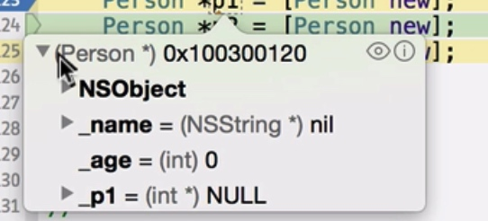
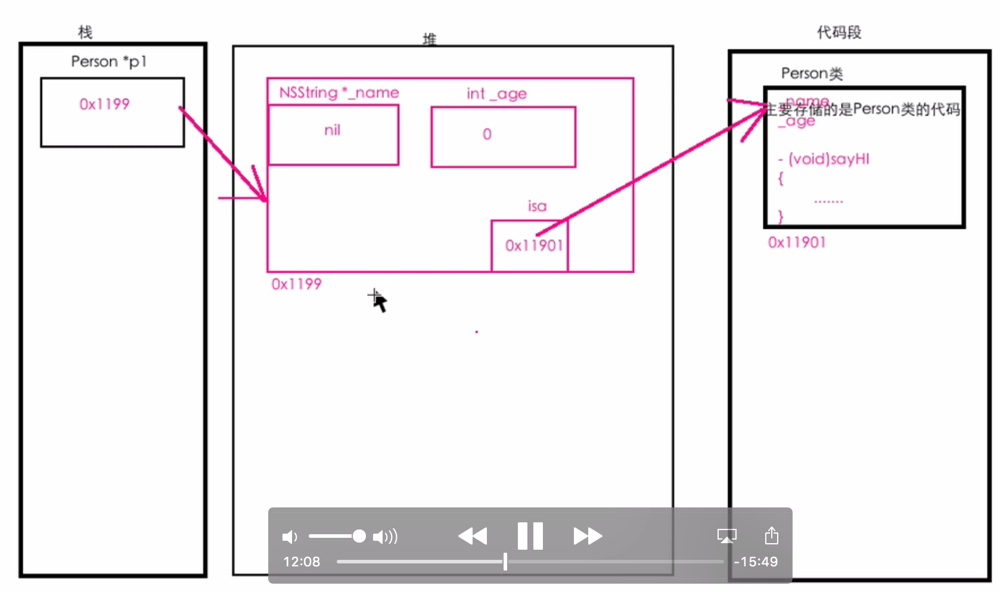
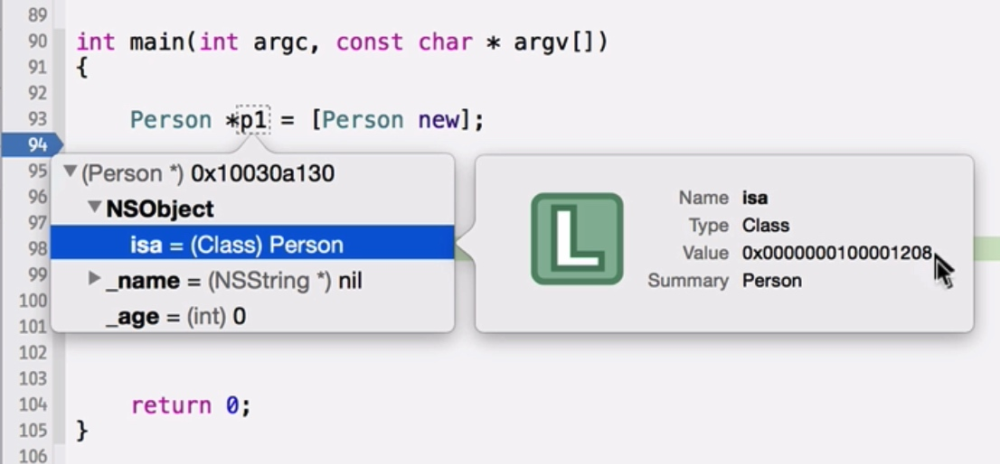
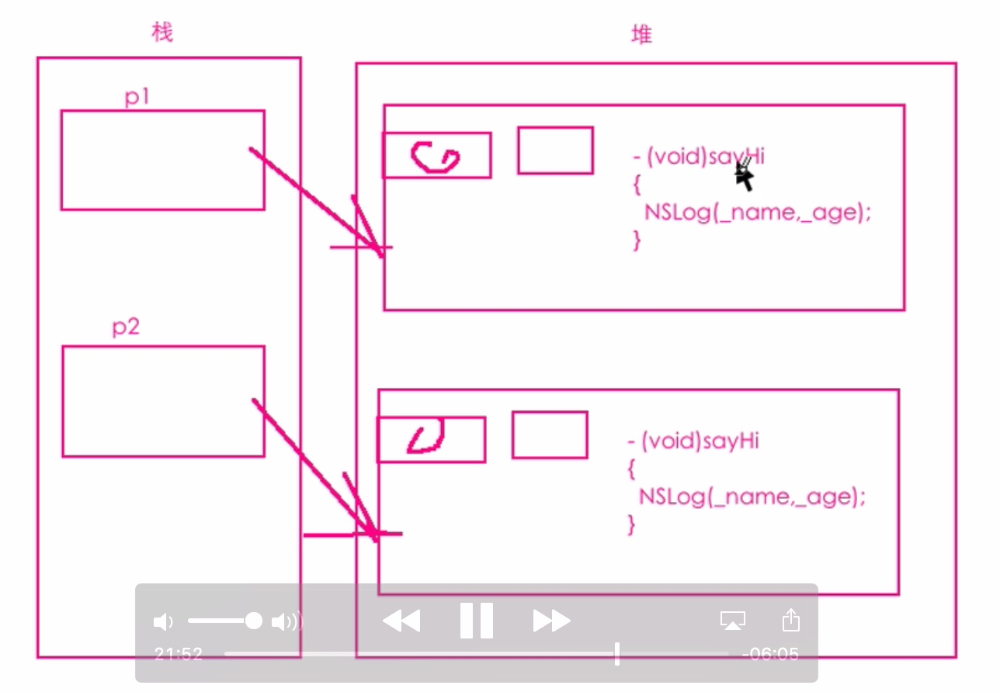

对象在内存中式如何存储的
内存中的五大区域：
- 堆： 程序员手动申请的字节空间： malloc calloc
- 栈： 存储局部变量
- BSS段： 存储未被初始化的全部变量 静态变量
- 数据段(常量区)： 存储已被初始化的全局 静态变量，常量
- 代码段： 存储程序的代码
类加载
- 在创建对象的时候， 肯定是需要访问类的
- 声明一个类的指针变量也会访问类的
- 在程序运行期间，当某个类第一次被访问的时候，会将这个类存储到内存中的代码段区域，这个过程叫做类加载。
- 直到程序结束的时候才会被释放。
对象在内存中的存储
假设写在函数当中：
Person *p1 = [Person new];
- Person * p1 : 会在栈内存中申请一块空间，在栈内存中声明一个Person类型的指针变量p1(指针变量只能存储地址);
- [Person new]: 真正在内存中创建对象的其实是这段代码;
new做的事情：
- 在堆内存中申请一块合适大小的空间;
- 在这个空间根据类的模板创建对象;
- 类模板中定义了什么属性，就把这些属性依次声明在对象之中
- 对象中还有另一个属性，叫做isa，这是一个指针，指向对象所属的类在代码段中的地址。
- 初始化对象的属性：
如果属性的类型是基本数据类型，那么就赋值0；
如果属性的类型是C语言的指针类型，那么就赋值为NULL；
如果属性的类型是OC的类指针类型，那么就赋值为nil


代码中的检测：

注意
对象里面只有属性，没有方法(自己类的属性 + isa)；
如何访问对象的属性？
- 指针名->属性名；
- 根据指针 找到指针指向的对象 再找到对象中的属性来访问；
如何调用方法？
- 先根据指针名找到对象，对象发现要调用方法，在根据对象的isa指针找到类，然后调用类里面的方法；
问题
为什么不把方法存储在对象之中？
- 因为每一个对象的方法的代码实现都是一样的，没有必要为每一个对象都保存一个方法。
